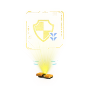
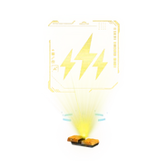
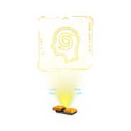
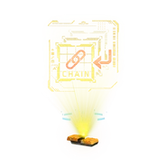

Ezek személyes tapasztalatok alapján írom. Nem akarom megbántani azt akinek más a véleménye.

Megnőveli az ellenfelekbe vítt sebzést. Bossok ellen hatékony tud lenni
Az elején azt hittem hogy rossz. A játék vége fele amikor az ellenfelek hacking gridje nehezebb lett akkor igenis hasznos volt. Aztán rájöttem hogy tudod kombinálni más Hacking Node okkal(Pl: Consufe) És akkor a többi ellenfél is megkapja a többi hacking nodeot az OPEN statel együtt! Nincs értelme bossok ellen viszont

Megálítja az ellenfeleket mozgás képtelenné téve őket néhány másodpercig. Bossoknál kevesebb idő.

Chef kiss. Sokszor mentett már meg. Egymás ellen fordítja a robotokat sok ideig, és van időd őket lelőni vagy meghackelni vagy robantani vagy healelni. Bossok ellen nem ér semmit.
A következő hack DMG critikus lesz és könyebben zavarod meg az ellenfeled.
A HEAT gaude hamarabb töltődik fel. De eleve a HEAT eléggé rossz. Bossok ellen meh.
A potenciálisan legrosszabb dolog az egész játékban. Vissza kéne hogy healeljen miközben sebzed az ellenfeled. De a healre vannak a healing capsuleok. 8at tarthatsz magadnál. És ennek a Nodenak a healje ireleváns és Minimális. Ne használd SEHOL.

Nem annyira jó. Minél több sima Nodeon mész át annál nagyobb DMG-et viszel be. Nem annyira jó mivel ezt a Hacking Grid Puzzlet gyorsan akarod végre hajtani. Meh bossoknál